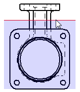

Set Drawing View Depth command bar
Defines a visible display depth (the depth you want to keep).
- Depth
-
Sets the visible depth of the drawing view and applies a back clipping plane at that location.
You can type and enter a value on the command bar, or define the depth using the cursor and the dynamic clipping plane line visible in any orthographic view.
-
When you type and enter a value, or when you click a point in free space in the drawing view, the Depth value is not associative to the model. It specifies a value that is used only to define the plane initially.
-
When you locate and click a model keypoint or a centerline in the drawing view, the Depth box displays an associative value. This depth value is maintained even when the model changes.
-
The solid red line represents the clipping plane.
-
The shaded rectangle represents the area to be removed.

-
-
- Step
-
Sets the Depth value to increase or decrease in set increments as you move the cursor over the drawing view geometry.